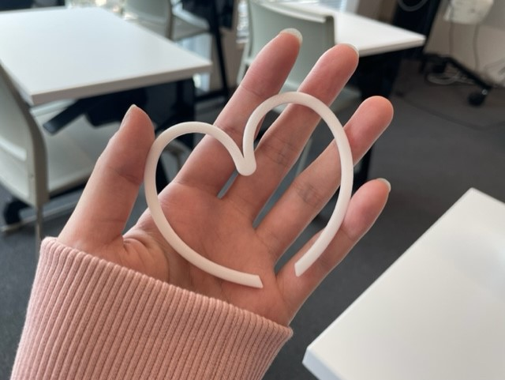

<!DOCTYPE html>
<html lang="jp">
<head>
    <title>LynnOhnoのページ/課題第2回/10/15-11/5</title>
    <link rel="stylesheet" href="css/style.css">
</head>
<body>
    <h1>作品名：へんなめがね</h1>
    <h1>スケッチ</h1>
   <div>
    <br>   
    構想→木製だから、木の温かみを感じられるような、だけど珍しさも少しあるものを作りたかった。<br>
    レーザーカッターでの作成だったので、その中でも比較的作りやすそうなものにした。<br>
    構想スケッチ内にもあるように、スマホケースも考えた。<br>
    以前レーザーカッターが普及してきた頃、テレビでオリジナルのスマホケースを作っているのがあった。<br>
    辞めた理由は、その時ケースを作っていたのではなく、木製のケースに、レーザーで彫刻をしていたので、<br>
    今回は製作しないことにした。機会があれば、自分でスマホケースを持ってきて、好きな柄のケースを作ってみたい。<br>
   </div>
    <h1>実際に作ったもの</h1> 
   <div>
    <!---着用しているとこを写真に収める-->
    <br>
    ー感想ー<br>
    想像していたよりも、ものすごく大きいものになってしまった。<br>
    掴む部分も一般的なピンセットのように、少し角度をつけたものにしたかったが、<br>
    ただの斜めになってしまった。改善できるポイントだと思う。<br>
   </div>
    <h1>ファイル</h1>
    <!---pdfファイルをfilesフォルダにいれて、そこにリンクを貼る-->

    <h1>作品の説明</h1>
   <div> 
    木製のめがね。サイドに最近気に入っている日本語を入れてみた。<br>
    以前レーザーカッターが普及してきた頃、テレビでオリジナルのスマホケースを作っているのがあった。<br>
    辞めた理由は、その時ケースを作っていたのではなく、木製のケースに、レーザーで彫刻をしていたので、<br>
    今回は製作しないことにした。機会があれば、自分でスマホケースを持ってきて、好きな柄のケースを作ってみたい。<br>
　　</div> 
    <h1>作品への想い</h1>
   <div> 
    普段から目が悪く、めがねを使っていますが、すごく普通な黒縁のめがねをつけているので、<br>
    作品を見た人全員が「あっ」と驚くようなものを作りたかった。<br>
    他にも面白くなるような、ちょっとした工夫を加えたい。<br>
   </div> 
    <h1>調べたこと</h1>
   <div> 
    このサイトに載っていたPDFファイルを使用した。<br>
    自分で線の色を変更したり、彫刻（テキスト）を入れたり、サイズを変更した。<br>
   </div> 
    <h1>使用動画</h1>
    <!---動画を撮影してYoutubeのリンクをここに貼り付けする。実際につけてみる-->

</body>
</html>